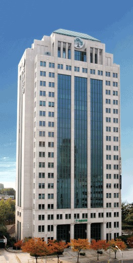

홈
> 소개 > 회사개요
홈
> 소개 > 회사개요
회사개요
모두의 건강과 행복이라는 큰 꿈을 가진 버드나무는 지금도 국민과 함께 자라고 있습니다.

"가장 좋은 상품을 만들어 국가와 동포에게 도움을 주자"라는 창업자 유일한 박사의 정신으로 1926년 유한양행은 설립되었습니다.
유한양행은 창업이래 지금까지 신뢰와 정직의 기업문화를 가지고 우수한 의약품 생산과 국민보건 향상에 매진해 왔습니다. 국내 1등 제약사, 국내 대표 장수기업 등 외형적 성장뿐만 아니라 한국에서 가장 존경받는 기업 등 사회공헌 대표기업으로 자리매김하고 있습니다. 또한 유한양행은 국민보건 향상과 직결되는 의약품뿐만 아니라 건강기능식품, 생활용품, 동물약품 등 인류의 건강와 삶의 질을 높일 수 있는 다양한 사업에 진출하며 미래의 지속성장을 위해 노력하고 있습니다. 그리고 끊임없는 연구개발을 통해 혁신적신 개발로 글로벌 시장 진출에 박차를 가하고 있습니다.
국내 1등을 넘어 글로벌 제약사로의 길, 인류 건강을 위한 그 길을 유한양행은 큰 꿈을 갖고 걸어가려 합니다.
| 기업명 | 유한양행 |
|---|---|
| 대표이사 | 사장 조욱제 |
| 설립 | 1926.06.26 |
| 상장일 | 1962.11.01 |
| 주소 | 서울 특별시 동작구 노량진로74 |
| 전화 | 02- 818 - 0181 |